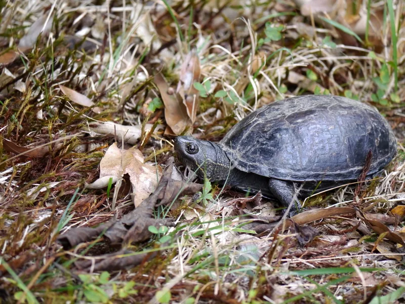

フロリダ半島を中心に分布する小型ドロガメ。甲羅に3本の縦縞が入る個性的な外見が特徴。ニオイガメよりやや管理に注意が必要だが、小型で省スペース飼育が可能。

1年後の甲長は7〜10cm程度。頭部の三本の薄い縦ストライプが個性的で、横から見るとよく分かる。フロリダ〜ジョージアの浅い湿地・運河に生きる底生種。乾季には陸に上がる習性があり、水棲期と陸棲期を合わせた環境設計が必要になる。
10年後は甲長10〜13cm、重さ200〜380g程度が多い。30〜45cm水槽で安定して飼えるサイズ感。15〜30年の寿命があり、季節的な上陸習性への対応を長期で見込んだ環境設計が飼育の安定につながりやすい。
「ミスジドロガメ」というと、ドロガメ属のstriped mud turtle（本種）と混同されやすいが、本種はKinosternon baurii（ドロガメ属）であり、カブトニオイガメ（Sternotherus carinatus）とは全くの別種。日本語名が似ているため取り違えが起きやすく、購入前に学名を確認しておくことで不要な混乱を防ぎやすい。
フロリダ半島・ジョージア州南部の浅い湖沼・湿地・運河に生息。底に潜って休む底生傾向が強く、乾季には上陸して陸上で過ごすことも。雑食で水生無脊椎動物・藻類・果実を食べます。
底生傾向が強いため、底砂を薄く敷き潜れるシェルターを用意すると落ち着きます。
← 横にスクロールできます
| 種名 | 甲長 | 難易度 | 必要水槽 | 特徴 |
|---|---|---|---|---|
| ミスジドロガメ このページ | 9〜12cm | 入門〜中級 | 30〜45cm | 本種・縦縞模様 |
| ニオイガメ | 10〜14cm | 入門 | 30〜45cm | 完全入門 |
| トウブドロガメ | 9〜12cm | 入門 | 30〜45cm | 無地・おとなしい |
| ミシシッピドロガメ | 10〜12cm | 入門 | 30〜45cm | 最小型 |
機材を揃える前に適性診断で確認。100種対応のツールで、あなたの生活環境に合う種も確認できます。